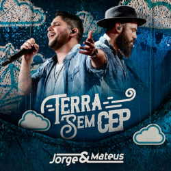
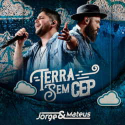
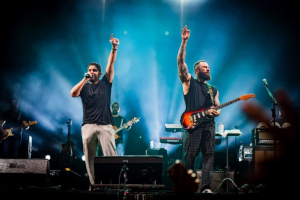

Fonte da Imagem: curtamais
- Formação da Dupla (2005)
- Em 2005, Jorge & Mateus se conheceram em Itumbiara (GO) e iniciaram a parceria que se tornaria uma das maiores do sertanejo brasileiro.

Fonte da Imagem: Wikipédia
- Lançamento do Primeiro Álbum (2007)
- Em 2007, lançaram o álbum Ao Vivo em Goiânia, com sucessos como Pode Chorar e De Tanto Te Querer, conquistando fãs em todo o país. Saiba mais sobre o lançamento do primeiro álbum.

Fonte da Imagem: Pinterest
- Consolidação do Sertanejo Universitário (2008-2010)
- Entre 2008 e 2010, fortaleceram o estilo sertanejo universitário, lançando álbuns e DVDs de grande sucesso, como O Mundo É Tão Pequeno e Ao Vivo em Uberlândia.
.jpg)

Fonte da 1º Imagem: TRIBUNA / Fonte da 2º Imagem: POPNOW
- Turnês Internacionais (2010 em diante)
- Realizaram shows em diversos países, como EUA, Inglaterra e Portugal, levando a música sertaneja a palcos internacionais.
Fonte do Video: Vimeo
- Álbum "A Hora é Agora" (2012)
- Lançaram o álbum A Hora é Agora, com músicas que ficaram entre as mais tocadas no Brasil, como Amo Noite e Dia.
 

Fonte da 1º Imagem: Letras / Fonte da 1º Imagem: Letras
- Sucessos Contínuos e Prêmios (2015-2020)
- Lançaram álbuns como Os Anjos Cantam (2015) e Terra Sem CEP (2018), conquistando discos de platina e milhões de fãs.

Fonte da Imagem: MS Conecta
- Legado Cultural (Atualidade)
- Atualmente, são referência na música sertaneja, influenciando novas gerações de artistas e mantendo uma forte conexão com o público.